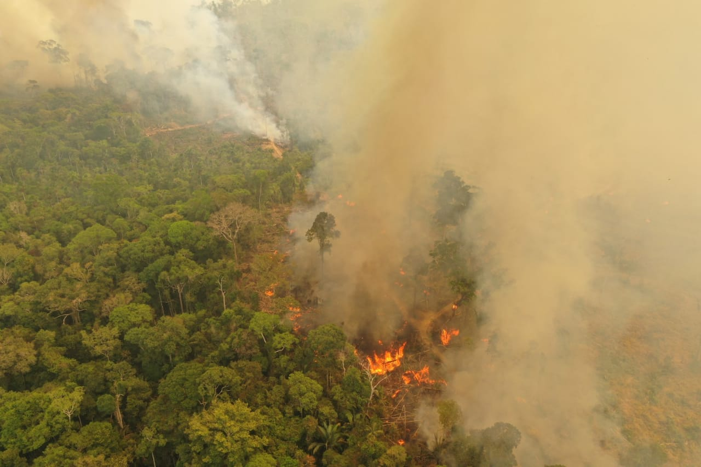
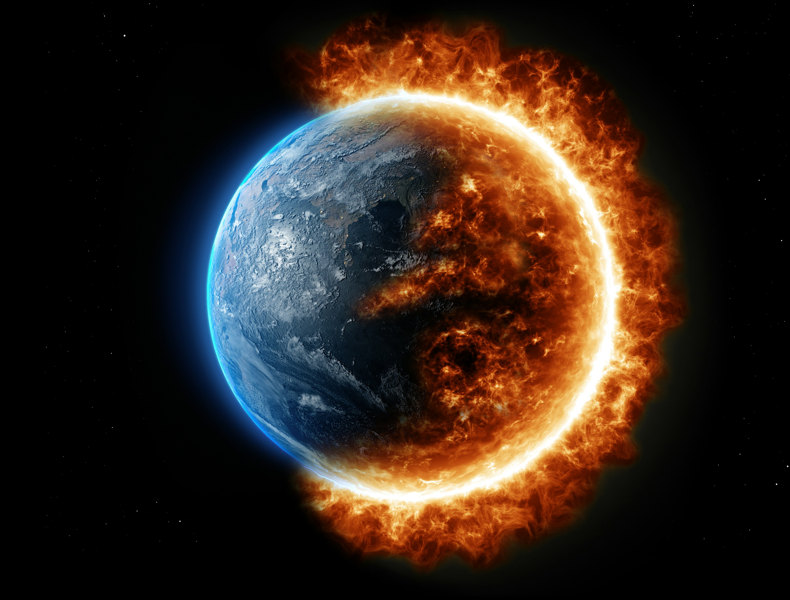

Zerar o desmatamento
Informe-se sobre o nosso planeta
Nosso planeta está ameaçado
Saiba por que nossos ecossistemas estão em risco e o que podemos fazer por um mundo mais verde e pacífico

Salve a Amazônia
A cada ano que passa, a destruição das nossas florestas avança em um ritmo alarmante. O aumento desenfreado do desmatamento não é apenas uma perda de árvores; é o motor que agrava severamente as mudanças climáticas, desregula o ciclo das chuvas e eleva as temperaturas globais a níveis extremos.

Podemos mudar o mundo
Atuamos de maneira independente para remover o plástico de nossas praias e proteger a vida marinha. Limpamos a costa para evitar que toneladas de resíduos sufoquem a biodiversidade e poluam as águas. Sua ajuda é fundamental para manter nossos mares vivos e limpos para as próximas gerações.